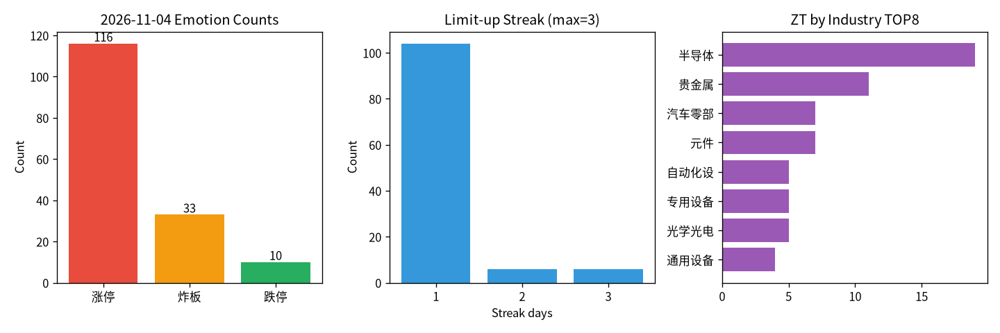

交易日 2026-11-04（周三） · 目标交易日 2026-11-05（周四） · 修复·半导体
Review：主线/风控对·华创条件偏严 情绪：修复（高低切换） 主线：半导体 涨停 116 · 炸板率 22.1%更新说明（2026-11-05 重排版）：顺序改为「指令 Review → 明日可执行指令 → 情绪/量能/资金展开 → 总原则」。Review 数据快照约 11:29 北京时间（2026-11-05 上午盘中），非收盘定论，收盘后可覆核改判。
对照下文第 2 节六条指令，用 11-05 盘中快照复盘；数字来自新浪公开行情。
hq.sinajs.cn 实时字段（开/高/低/现/昨收/成交额）；东财 stock_zh_a_spot_em / 连续 stock_zh_a_hist 当日曾 Push2 限流，未再强刷。昨收一律取指令参考价（与新浪昨收字段一致）：北方华创 535.50、通富微电 42.33、高争民爆 68.95、宝明科技 33.40、云南锗业 75.38、长电科技 51.74。
理论涨停价（昨收×1.1）：589.05 / 46.56 / 75.85 / 36.74 / 82.92 / 56.91。
（涨跌幅 = 相对昨收；开% = 今开相对昨收。现价为 11:29:51 快照。）
| 票 | 昨动作 | 今开 / 高 / 低 / 现 | 相对昨收%（开/高/低/现） | 判定 | 一句话原因 |
|---|---|---|---|---|---|
| 002371 北方华创 | 开多（条件） | 546.21 / 589.00 / 544.01 / 567.30 | +2.00 / +9.99 / +1.59 / +5.94 | 部分对 | 主线对、温和高开未破 3% 禁令，但「平～低开 + 回踩昨收」字面未满足，严格条件可能空仓错过摸板行情 |
| 002156 通富微电 | 开多备选 | 43.14 / 46.56 / 42.57 / 45.38 | +1.91 / +9.99(触涨停) / +0.57 / +7.21 | 对 | 微高开<3% + 回踩昨收附近，条件几乎满分兑现，冲涨停且现价已进目标带 |
| 002827 高争民爆 | 只观察/不加 | 75.84 / 75.84 / 68.66 / 70.33 | +9.99(近一字涨停开) / +9.99 / −0.42 / +2.00 | 对 | 涨停开后大幅回落，高度接力不参与完全正确 |
| 002992 宝明科技 | 只观察 | 33.07 / 33.07 / 30.82 / 32.13 | −0.99 / −0.99 / −7.72 / −3.80 | 对 | 弱开弱走，跟风二板观察不做仓避免亏损 |
| 002428 云南锗业 | 不加 | 79.90 / 82.66 / 77.96 / 79.13 | +6.00 / +9.66 / +3.42 / +4.97 | 部分对 | 高开 6% 本就不追；票仍强属辅线溢价，过程纪律对、结果留遗憾 |
| 600584 长电科技 | 只观察 | 51.35 / 56.10 / 51.00 / 54.19 | −0.75 / +8.43 / −1.43 / +4.74 | 部分对 | 封板质量排序次于华创/通富仍成立；微低开后偏强，观察偏保守但未排成第一仓是对的 |
成交额（同快照）：华创约 78.84 亿、通富约 52.98 亿、高争约 25.45 亿、宝明约 2.02 亿、云南锗业约 74.30 亿、长电约 53.95 亿。
| 维度 | 打分 | 说明 |
|---|---|---|
| 情绪=修复 | 对 | 高度端（高争）冲高回落，跟风二板（宝明）偏弱；同时涨停结构里的新主线中军仍能上冲，符合「修复而非冰点、也非无脑接力高潮」。 |
| 主线=半导体中军 | 对 | 华创/通富/长电集体红盘偏强，通富更触涨停；钱仍在半导体，不是一日游假切。 |
| 分档态度（开多/备选/观察/不加） | 偏对 | 通富条件单、高争/宝明回避打得准；华创条件措辞与真实「温和高开不回昨收」有缝；锗业/长电过程对、弹性上偏保守。 |
一句话总评（盘中）：主线和风控分层明显加分；最大可改进点是 「0～3% 高开」进场句写清，以及 回踩买入与开盘价止损不要绑死。收盘若中军大回吐，本节情绪/目标达成度需降级重评。
下列均为 规则调整建议，未经历史回测，先作模板迭代，再用样本外验证。
标注：未回测。
止损与进场价匹配
标注：未回测（−3% 还是 −5% 需后验）。
中军拆成「辨识中军」与「弹性中军」
标注：未回测。
观察票升级扳机（长电类）
标注：未回测；防止观察名单偷偷变相加仓。
辅线过滤保持 + 只作情绪探针
此条是复盘纪律，不单是开仓规则。
数据与 Review 流程
| 票 | 会否进场（按昨文字） | 路径速写 |
|---|---|---|
| 北方华创 | 字面偏 否/灰；宽松或可 | 未回昨收；高点近涨停；现约 +5.9%；开盘价止损有扫损噪音 |
| 通富微电 | 是 | 回踩昨收后冲涨停；现约 +7.2%，目标带内 |
| 高争民爆 | 否（正确） | 涨停开→回落至约 +2% |
| 宝明科技 | 否（正确） | 弱，现约 −3.8% |
| 云南锗业 | 否（纪律正确） | 高开 6%，现仍约 +5%，结果留机会成本 |
| 长电科技 | 否（默认观察） | 微低开后偏强约 +4.7%，缺升级条款则空仓 |
情绪 = 修复 → 最多 1～2 个条件开仓 + 观察名单；总仓位从严。进场只看：竞价高低开、板块资金是否还在、能否回封/承接、量能是否跟上；高开猛追、一字博弈、高度接力一律不做。
| 字段 | 内容 |
|---|---|
| 代码+名称 | 002371 北方华创 |
| 动作 | 开多（仅满足进场条件时） |
| 角色 | 半导体中军 / 辨识度龙 |
| 今日收盘参考 | 535.50（已涨停）；理论次日涨停约 589.05、跌停约 481.95 |
| 进场 | ① 竞价 平开～低开 3% 以内可关注；② 开盘后看 半导体板块资金是否还在（同类中军不集体翻绿），个股回踩昨收附近能重新承接/回封、量能不崩再买；③ 高开 ≥3%（约≥551.5）不追；④ 开盘直接一字涨停不追。 |
| 止损 | 跌破当日开盘价 或 相对成本 -5%（先触先走） |
| 目标 | 冲涨停或日内 +7% 减半；剩余看能否继续强封/强势收盘，弱转强失败则收盘前清 |
| 建议仓位 | 短线专项 12%～15% |
| 原因 | 半导体主线大市值中军首板，封单靠前、换手克制；修复期优先「钱还在的中军承接」，不做高位杂毛。 |
| 作废 | 高开超 3% 追价；竞价大幅低开 ＞5% 且迅速无承接；半导体竞价集体翻绿且该股弱于板块；盘中主线被砸（半导体领跌、炸板潮起）→ 本指令作废。 |
| 字段 | 内容 |
|---|---|
| 代码+名称 | 002156 通富微电 |
| 动作 | 开多（备选；若已按指令1开北方华创，本票最多极轻仓或放弃） |
| 角色 | 半导体封测方向强封标的 |
| 今日收盘参考 | 42.33；理论次日涨停约 46.56、跌停约 38.10 |
| 进场 | 竞价平/微高开（<3%）；开盘后回踩昨收附近能承接、且板块资金仍在再买；高开≥3% 或 低开＞5% 不参与。 |
| 止损 | 跌破开盘价或成本 -5% |
| 目标 | +7%～+10% 减仓；冲击涨停可留核心 |
| 建议仓位 | 专项 8%～10%（若与北方华创同持，两者合计 ≤专项 20%） |
| 原因 | 今日半导体封板资金前列，弹性大于中军，波动也更大 → 仓位低于北方华创。 |
| 作废 | 同指令1主线被砸；自身竞价弱、开盘持续无承接/弱于板块；与指令1合计将破仓位上限时放弃本票。 |
| 字段 | 内容 |
|---|---|
| 代码+名称 | 002827 高争民爆 |
| 动作 | 只观察 / 不加 |
| 今日收盘参考 | 68.95（3板，早盘封死，换手极低） |
| 进场 | 无。一字或高开接力环境差，修复期不追高度。 |
| 止损/目标/仓位 | — / — / 0% |
| 原因 | 空间龙位置在，但昨日起全市场高度断板亏钱效应强，3板接力胜率差。 |
| 作废/关注点 | 若竞价打开后迅速砸且无板块承接 → 视为高度继续退潮信号，当天整体更应空仓/极轻。 |
| 字段 | 内容 |
|---|---|
| 代码+名称 | 002992 宝明科技 |
| 动作 | 只观察 |
| 今日收盘参考 | 33.40（2板，约 14:01 才封，封资偏弱） |
| 进场 | 默认不参与。仅当竞价强、开盘后昨收附近有承接且半导体共振时，才可记入「极端苛刻反抽」观察，仍建议 不开仓。 |
| 仓位 | 0% |
| 原因 | 偏题材跟风二板且封板质量一般，修复期不优先。 |
| 字段 | 内容 |
|---|---|
| 代码+名称 | 002428 云南锗业 |
| 动作 | 不加（贵金属/小金属辅线） |
| 今日收盘参考 | 75.38（首封早，但全日炸 3 次） |
| 原因 | 辅线早盘有辨识，但炸板多次、一日游风险高；修复期不做第二主线仓。 |
| 仓位 | 0% |
| 字段 | 内容 |
|---|---|
| 代码+名称 | 600584 长电科技 |
| 动作 | 只观察 / 默认不加 |
| 今日收盘参考 | 51.74（首板，炸 4 次后回封） |
| 进场 | 默认不加。若明日竞价强、开盘后板块资金明确还在且该股能快速回封，才升级为「极轻观察」，仍次于北方华创/通富微电。 |
| 仓位 | 0%（默认） |
| 原因 | 同属半导体，但今日炸板次数多、封板不干净，修复期优先封单质量更好的中军。 |
依据（一两句）：昨4板龙头阳光照明近跌停（约 -9.9%）、七匹狼（昨2板）炸板近 -10%、皇台酒业（昨3板）炸板约 -4.7%，高度端亏钱效应明确；但今日涨停仍有 116 家、炸板率约 22.1%，资金切到半导体+贵金属等新方向承接——不是冰点空仓市，也未到可无脑接力的主升/高潮。定性为 高低切换后的修复，轻仓做新主线中军回踩承接，严禁追高板/接力杂毛。
| 指标 | 数值 | 备注 |
|---|---|---|
| 涨停家数 | 116 | 已剔 ST / 北交所(含92开头) |
| 跌停家数 | 10 | 跌停池 |
| 炸板家数 | 33 | 炸板池 |
| 炸板率 | 22.1% | 炸板/(涨停+炸板)=33/149 |
| 连板高度 | 3板 | 今日最高连续涨停天数 |
| 连板结构 | 3板 6 / 2板 6 / 1板 104 | 量在低位、尖在退潮 |
| 昨日涨停数 | 48 | previous 池 |
| 晋级数 / 晋级率 | 13 / 27.1% | 昨涨停今仍涨停，晋级偏弱 |
| 高度亏钱样本 | 阳光照明约-9.9%；七匹狼炸板近-10%；皇台酒业炸板约-4.7% | 高度端退潮确认 |
| 两市成交额 | 数据缺口 | 箱内 CSV/旧报告无两市总成交；涨停池成交额合计约 1605亿（仅涨停标的，非全市场） |

附图参考：emotion_20261104.png（涨停/炸板/跌停 + 连板分布 + 行业集中）。
读表一句话：涨停数量尚可、炸板率不极端，但晋级率偏低 + 高度断板亏钱 → 情绪在修复而非主升；仓位与进攻只能跟「钱还在的主线中军」，不能跟高度杂毛。
概念涨幅榜东财接口当日限流/失败；主线判断依据 = 涨停池行业集中度 + 封板时间/封单资金 + 是否回封，而非概念榜。
20261104；两市总成交额箱内 数据缺口（未编造）；概念涨幅榜接口失败已注明。数字来自当日真实 CSV/metrics_20261104.json。口径：主看情绪、资金、量能；进场用语为竞价高低开 / 封板·回封·炸板 / 板块资金 / 量能是否跟上。与股指衍生品策略无关。